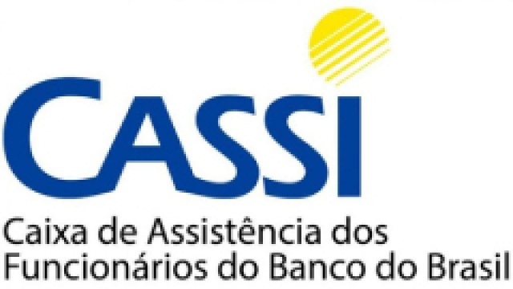
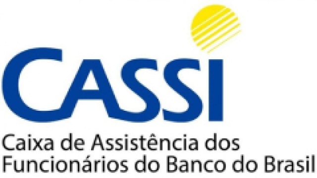

QUEM SOMOS

O Hospital Espírita de Pelotas é uma instituição especializada, que há mais de setenta anos oferece para a população de Pelotas e região sul do estado serviços na área da psiquiatria.
Somos referência para 22 municípios da 3 Coordenadoria Regional de Saúde, atendendo uma população de aproximadamente 1.000.000 habitantes.
Contando com diversos serviços e processos terapêuticos, o Hospital Espírita de Pelotas mantém suas portas abertas 24 horas por dia, nos sete dias semana, estando pronto para auxiliar àqueles que precisarem de sua ajuda, seguindo o seguinte norte:
MISSÃO
Desenvolver ações de cuidado na área da saúde mental, primando tanto pela qualidade dos serviços ofertados, quanto pela responsabilidade social, além de agir em conformidade com a ciência, ética e espiritualidade.
- Humanização do tratamento
- Respeito ao ser humano
- Busca pela excelência
- Valorização dos colaboradores
VISÃO
Ser reconhecido como hospital psiquiátrico de referência na região sul do país, em virtude da humanização do tratamento e da excelência na qualidade dos serviços ofertados.
VALORES
- Ética
- Transparência
- Responsbilidade social
- Filantropia
 
